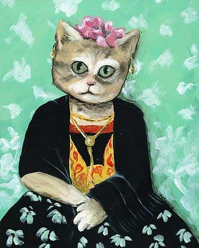

CV | CECILIA ESCALONA SIGALL
Diseñadora Integral

Perfil
22/10/1992 | Viña del Mar, Chile.
Diseñadora UV con conocimiento y experiencia en las áreas de formulación de proyectos, marketing y comunicación.
Profesional creativa, dinámica y entusiasta; con capacidad para lograr los objetivos del proyecto en desarrollo
de la mejor manera.
Gusto por los desafíos que se anteponen y por la constante búsqueda de nuevos retos de carácter personal o
grupal, además
de especial interés por el deporte y la vida sana, junto con un pensamiento responsable en términos de cuidado
del medio ambiente.
Formación Académica
- Marzo 2012 | Diseño, Escuela de Diseño, Universidad de Valparaíso.
- Licenciada en Diseño, Universidad de Valparaíso | Tesina: Caracterización del consumidor con estilo de vida
sustentable.
- Octubre 2017 | Diseñadora, Universidad de Valparaíso | Título: Sistema Comunicacional para potenciar la
Cooperativa Campesina de cultivos Andinos y sus productos a nivel regional.
Actividad Académica
2015 | Ayudante Laboratorio Cerámica I, DUV 391-17, Universidad de Valparaíso, Chile.
Interés personal
- 2015 | Voluntaria UV| Chañaral, III Región, Chile.
- 2014 | Voluntaria UV| Valparaíso, V Región, Chile.
- 2012 | Voluntaria Sueños de Navidad| Viña del Mar, V Región, Chile.
- 2010 | Voluntaria Reconstrucción| Santa Cruz, VI Región, Chile.
- 2010 | Voluntaria Centro de Acopio Ilustre Municipalidad de Los Andes| Los Andes, V Región, Chile.
Habilidades
- Illustrator.
- Photoshop.
- Indesign.
- Active Campaign.
- Wordpress.
- Herramientas de Ofimática.
- Cerámica.
- Maderas.
Idiomas
- Español, idioma nativo.
- Inglés, competencia profesional intermedia.
Revisa mi Linkedin!
| Visita mi Portafolio
| Volver al home